Monitoring, backup and restore, and security
Monitoring (WS-B)
Dashboard
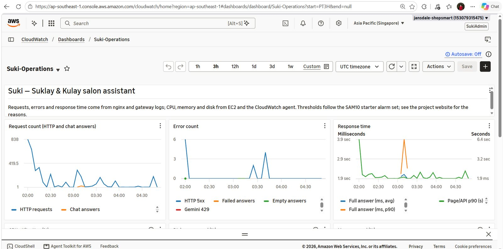
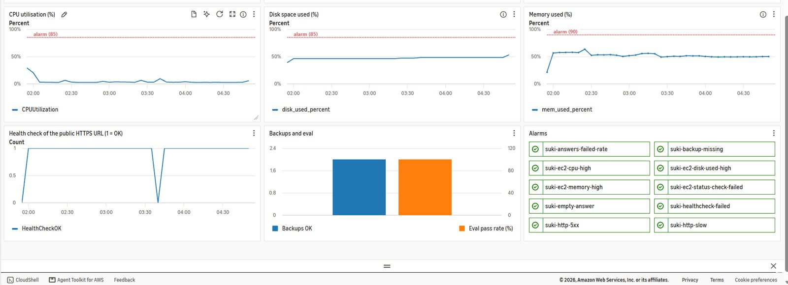
Widgets: request count, error count, response time, CPU, disk used, memory, health check, backup/eval and an alarm-status panel.
Alarms (12) and why we chose each threshold
| Alarm | Metric | Threshold | Why this threshold |
|---|---|---|---|
suki-ec2-cpu-high | EC2 CPUUtilization | > 85% avg for 10 min | Matches the starter set; short spikes during a deploy are normal, 10 minutes of it means a stuck process or a loop. |
suki-ec2-status-check-failed | EC2 StatusCheckFailed | > 0 for 2 min | The instance or its host is broken; nothing else works until this is fixed. |
suki-ec2-disk-used-high | CWAgent disk_used_percent (/) | > 85% for 10 min | Gives time to clean up before MongoDB stops writing at 100%; 10 minutes instead of 1 hour because our disk can fill in minutes (see the incident). |
suki-ec2-memory-high | CWAgent mem_used_percent | > 90% for 5 min | On 2 GiB RAM, above 90% LibreChat or MongoDB is close to being OOM-killed. |
suki-http-5xx | Suki/Http5xx (nginx log) | > 0 in 1 min | Any server error means a real user saw a broken page; there is no 'acceptable' level at our traffic. |
suki-http-slow | Suki/HttpResponseTime p90 (non-streaming) | > 3 s over 5 min | The starter-set 3-second rule, applied to pages and API calls; streaming chat is measured separately. |
suki-answers-failed-rate | Suki AnswersFailed / AnswersTotal | > 5% over 15 min | The system is up but not useful: catches model errors, quota and missing knowledge. |
suki-empty-answer | Suki/EmptyAnswer | > 0 in 30 min | An empty answer almost always means the content or the model call is broken. |
suki-model-latency-high | Suki/AnswerLatencyMs avg | > 15 s over 15 min | Gemini answers usually stream in a few seconds; 15 s on average means the provider is struggling. |
suki-model-rate-limited | Suki/ModelRateLimited (HTTP 429) | ≥ 3 in 15 min | The free tier has request limits; repeated 429s mean customers are being refused. |
suki-healthcheck-failed | Suki/HealthCheckOK (Lambda) | < 1 for 2 × 5 min; missing = alarm | Checks the public HTTPS URL from outside the server, exactly as a customer would (this also catches an expired certificate). |
suki-backup-missing | Suki/BackupSucceeded | < 1 in 24 h; missing = alarm | A backup that silently stops is worse than none; this alarms if the 6-hourly job has not reported success for a day. |
All alarms send to the SNS topic Suki alerts, which e-mails our real inbox. A monthly AWS Budget also e-mails us at 50%, 80% (actual) and 100% (forecast).
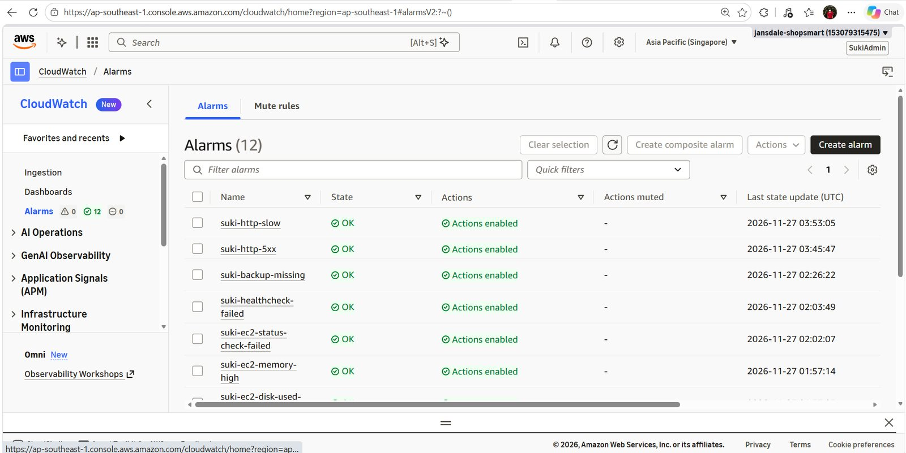
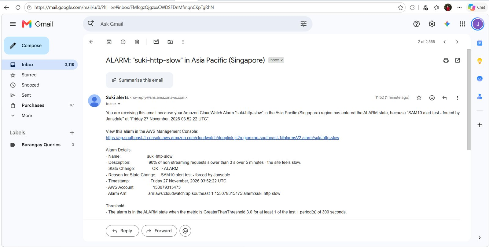
Request logging
| Log group | What | Retention |
|---|---|---|
/suki/gateway | One JSON line per question: question (PII removed), latency, first-token time, success, empty, HTTP status, model, knowledge version, app version, source (web or eval) | 30 days |
/suki/nginx | One JSON line per HTTP request: path, status, time (no IP) | 30 days |
/suki/app | LibreChat application log (JSON) | 30 days |
/suki/mongodb | Database log | 14 days |
/suki/automation | Backup, restore, eval, deploy, fault and bootstrap logs | 90 days |
2026-11-27T03:16:44Z How much is a gel manicure with chrome nail art on 3 nails? 2311 ms success=1 gemini-3.5-flash-lite
2026-11-27T03:16:34Z I'm a senior citizen. How much will a women's haircut cost? 2428 ms success=1 gemini-3.5-flash-lite
2026-11-27T03:16:25Z Can you help me with my Python homework? 1542 ms success=1 gemini-3.5-flash-lite
2026-11-27T03:16:16Z Do you offer microblading? 1650 ms success=1 gemini-3.5-flash-lite
2026-11-27T03:16:08Z How much do you charge for hair extensions? 1725 ms success=1 gemini-3.5-flash-lite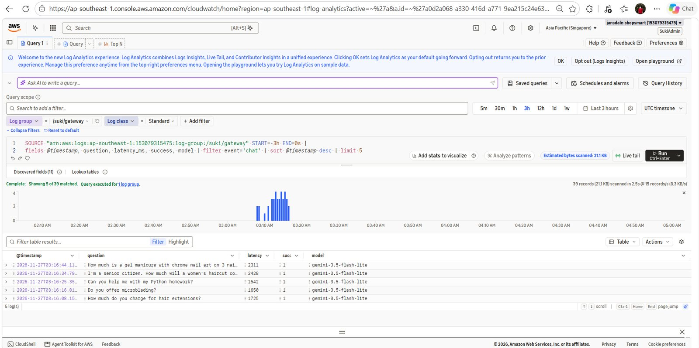
Custom "usefulness" metric (S): CloudWatch metric filters turn the gateway lines into Suki/AnswersTotal,
AnswersFailed and EmptyAnswer, so suki-answers-failed-rate fires when Suki stops being useful even though every server is healthy.
Backup and restore (WS-C)
What would have to be restored
| Item | Where it lives | How it is protected |
|---|---|---|
| Users and conversations | MongoDB on the instance's EBS volume | mongodump every 6 hours to s3://…/backups/mongo/, 14 days, with a manifest of document counts |
| Salon knowledge base | S3 content/ (+ Git) | S3 versioning (60 days of old versions) and Git history |
| Configuration (LibreChat, nginx, branding, scripts) | Git repository | GitHub, plus a config tarball in S3 with every backup |
| Secrets and settings | Parameter Store /suki/prod | Stay in Parameter Store (never copied); names recorded in each backup manifest; values can be regenerated except the Gemini key, which can be re-issued in Google AI Studio |
| Infrastructure | CloudFormation template in Git | Recreate with deploy-stack.sh |
Backup configuration
MongoDB runs in a container (not RDS), so the brief's rule is "a scheduled dump to S3 kept for at least 7 days":
suki-backup.timer runs ops/backup/backup.sh every 6 hours (00:00, 06:00, 12:00, 18:00 Asia/Manila); the bucket is versioned and its lifecycle rule keeps backups 14 days.
On success it publishes Suki/BackupSucceeded; if no backup succeeds for 24 hours, suki-backup-missing fires.

Restore test
We ran sudo ops/backup/restore-drill.sh --live: it stopped the app, moved the live database directory aside (simulating loss),
started an empty MongoDB, restored the newest dump from S3, compared document counts with the manifest, restarted the app, and timed the whole thing. We then logged in and checked our test conversations were back.
Drill 1 (2026-11-27 11:25 PHT) — a real finding. The newest backup had been taken before we created our user accounts, so the restore brought back an empty database (users 0) and we could not log in. That is exactly what RPO means: anything after the last backup is lost. We put the moved-aside database back, took a fresh backup, and repeated the drill. Change made: take a backup right after creating accounts or other important changes.
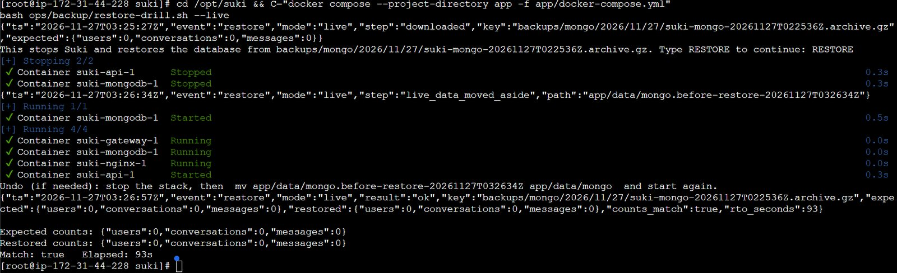
Drill 2 (2026-11-27 11:43 PHT): expected users 2, conversations 3, messages 8; restored exactly the same; counts_match: true, rto_seconds: 41. We logged in again and our conversations were there.
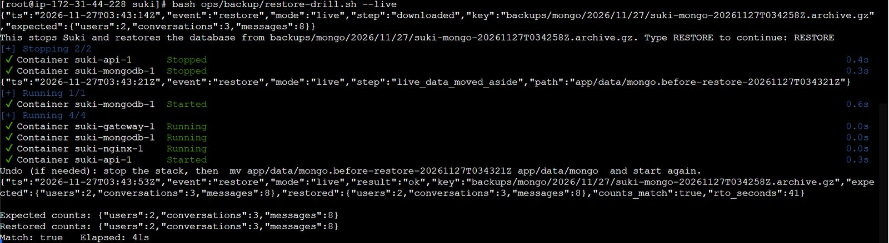
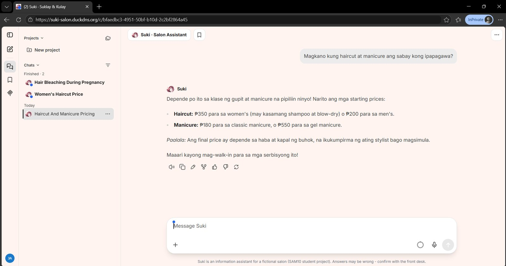
RPO and RTO
RPO: we can lose up to 6 hours of conversations (the time since the last dump); salon content and configuration lose nothing because they are versioned in S3 and Git. RTO: restoring the database on the running server took 41 seconds (0.7 minutes) in our drill on 2026-11-27; rebuilding everything from scratch (new stack + restore) would take about 15 minutes: on 2026-11-27 the new stack plus the server setting itself up took about 8 minutes (deploy log: certificate at 10:00, app ready at 10:01 PHT), then the restore.
Security (WS-D)
| Control | Risk it addresses (one sentence) | Evidence |
|---|---|---|
| MFA on every console user | A stolen password alone cannot open our AWS account. | E-12 |
| One IAM user each, no shared admin, admin via role | Every action is traceable to one person, and day-to-day logins cannot destroy the account. | E-12 |
| Secrets in Parameter Store (SecureString), read at runtime | No key can leak through the repository, a screenshot or a copied config file. | E-13 |
| Git history scanned (gitleaks in CI) | A key committed once and deleted later would still be found and rotated. | CI run |
| PII redaction in the gateway | Customers' phone numbers and e-mails never reach the third-party AI provider. | gateway log, PiiRedacted metric |
| Security group: only 443 (HTTPS) and 80 (redirect + Let's Encrypt check) open, no SSH | The database, the gateway and any shell are unreachable from the internet; plain HTTP to the app is refused except from the server itself. | SG rules |
| MongoDB with a password, not published to the host | The database is unreachable from outside the Docker network and useless without credentials. | compose file |
| Least-privilege instance role and GitHub OIDC role | A compromised server or CI job can touch only our bucket prefixes and parameters, with no long-lived keys. | IAM policy |
| Gemini key restricted and dated | A leaked model key works only for the Generative Language API and only until it expires. | Key created in Google AI Studio for this project only; stored only in Parameter Store |
| CloudTrail trail | We can see who changed what, and when, during an incident. | trail status |
| Encryption at rest (EBS, S3) and HTTPS (S) | Disks, backups and traffic are unreadable if copied. | describe-volumes |
| GuardDuty (S) | Would flag crypto-mining or credential misuse. | Not enabled: AWS returned SubscriptionRequiredException while the account was under verification. The template enables it once allowed. |
| Open sign-up with per-user and per-IP rate limits | Our instructor can register, but nobody can burn the free model quota (20 messages/min per user, 40 per IP, LibreChat sign-up limiter). | .env settings |
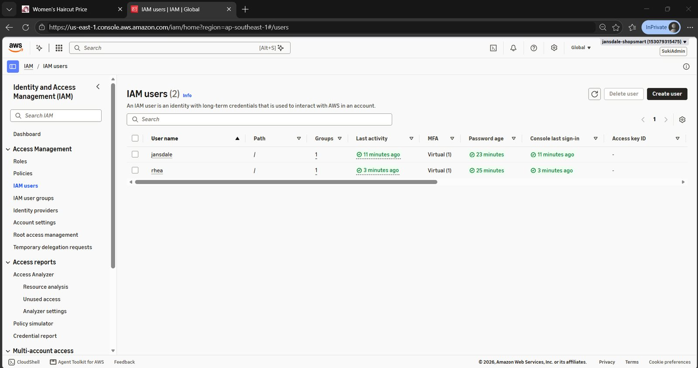
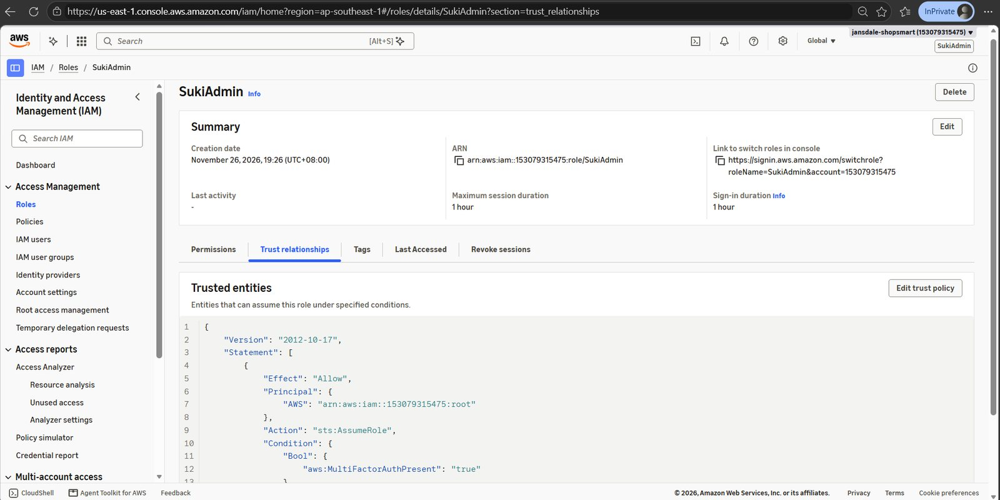
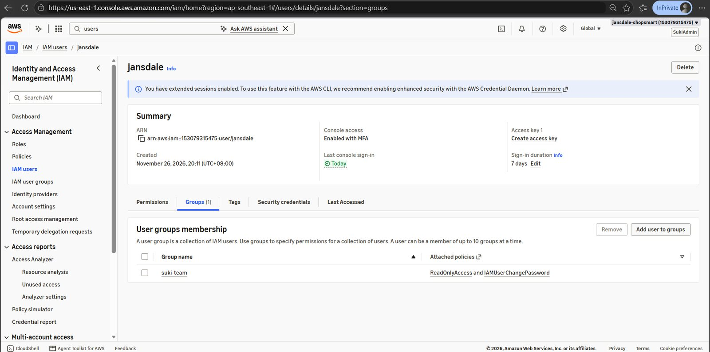
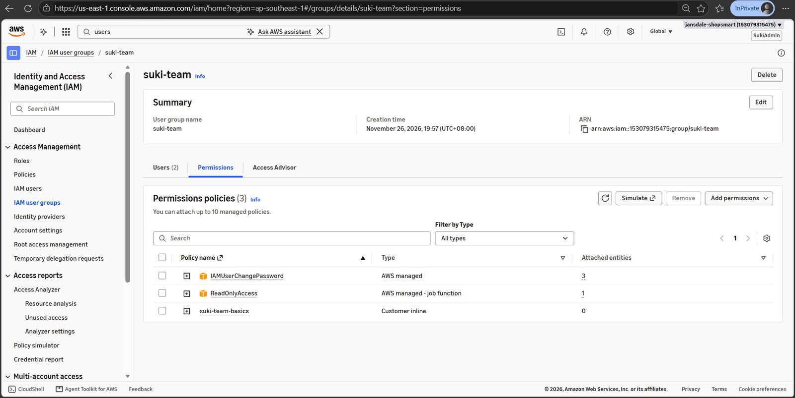
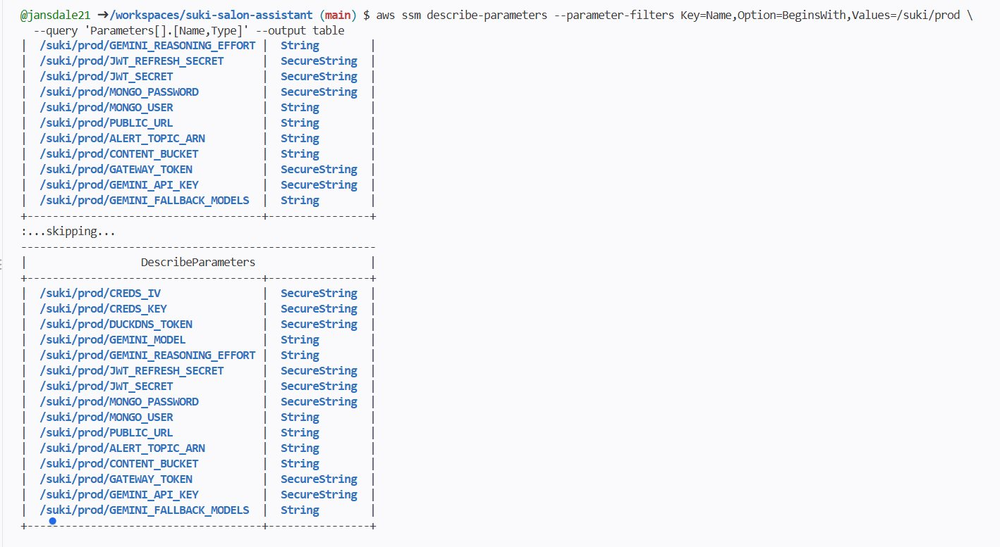
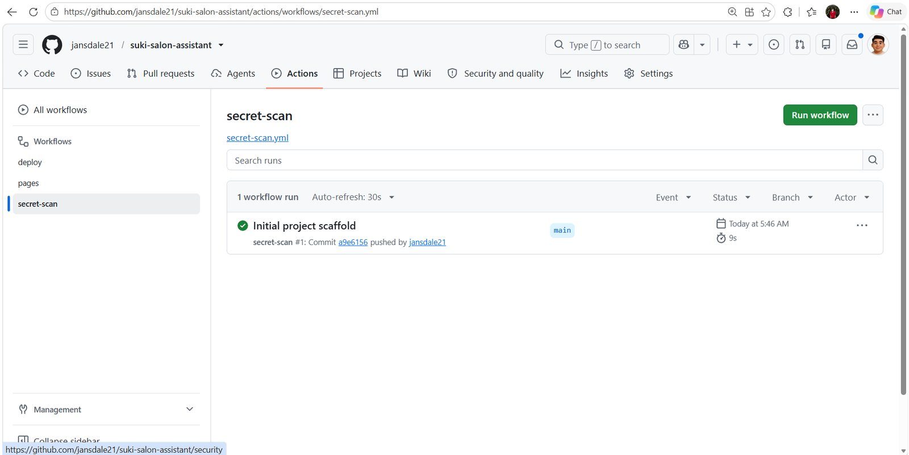
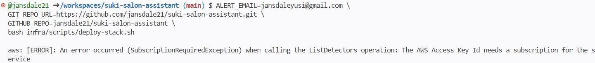
Before and after
| Problem found | Before | After |
|---|---|---|
| Database authentication | --noauth | root user + password from Parameter Store, internal network only |
| Secrets | plain .env in the project folder | Parameter Store; .env generated at deploy, root-only, git-ignored |
| Transport | HTTP | HTTPS (Let's Encrypt on nginx) |
| Exposure | app port open | 443 + redirect-only 80, no SSH |
| Registration | open | open, rate-limited |
| Personal data to AI provider | sent as typed | phones/e-mails removed first |
| Audit | none | CloudTrail (GuardDuty pending AWS verification) |